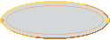

Duelo de dados maqueta jugable · v1
Un juego del centro de la Barra. Tú contra Don Crupier: cada uno saca dos dados y gana el total más alto (×2). Empate: se repite la tirada una vez; si vuelve a empatar, gana la banca (RTP 98,73 %). Tú solo decides el momento y la fuerza cosmética de la tirada: el resultado sale de la semilla antes de que ruede un solo dado. Todo el arte es nuevo: dados y cubilete trazados en 3D y cuantizados a la rejilla nativa (rampas de 3-4 tonos, tramado de 1 px, contorno índigo).
1 · La carta en la Barra junto a las tres que ya existen (CSS real del juego) · pulsa el precio para cambiar la ficha
2 · La mesa pulsa JUGAR · el crupier tira primero · MANTÉN pulsado (clic, Espacio o Enter) para agitar y SUELTA para lanzar · un toque rápido también vale

VS
3 · Tabla de pagos y RTP calculado por rtp.cjs enumerando las 36×36 combinaciones
Reglas y pagos
Si pierdes, pierdes solo la ficha (como en la Moneda). Ficha de 2, 5 o 10 con el mismo premio ×2: la ficha solo cambia el ritmo del crupier y la longitud de las pausas de tensión, nunca las probabilidades.
Distribución de un total (2d6)
Probabilidades exactas
Recompensas por niveles (según el margen)
Otras reglas que se consideraron
4 · El carrete de tiradas y las reacciones del crupier cada tirada sortea su presentación (sin repetir las 2 últimas, más peso a las menos vistas), independiente del resultado y de la apuesta
Presentaciones ()
Reacciones por situación (ES / EN según el idioma)
5 · Cómo funciona lo que propongo implementar
El flujo
- Apuesta: ficha de 2, 5 o 10 (clic en el precio, como en la Moneda). Se decide la semilla: las 4 caras (y la tirada de desempate, si la hay).
- La banca tira: Don Crupier agita y lanza con su presentación del carrete.
- Tu turno: mantén para agitar (el cubilete suena más cuanto más agitas), suelta para lanzar. Fuerza y momento = solo estética.
- Redoble mientras ruedan tus dados, parón dramático y los dos totales se comparan.
- Premio por niveles 1-2-3 según el margen: sonido, temblor y monedas crecientes.
Reglas de oro
- Resultado y presentación son independientes: ninguna presentación "avisa" de nada.
- Las caras salen de una semilla (mulberry32 + hash); la animación solo las ENSEÑA. Si se recarga a mitad, el crupier se guarda la ficha.
- "Reducir movimiento": una sola presentación corta, sin temblor ni vuelo.
- Mando: A / Espacio mantienen y sueltan; la cruceta cambia la ficha.